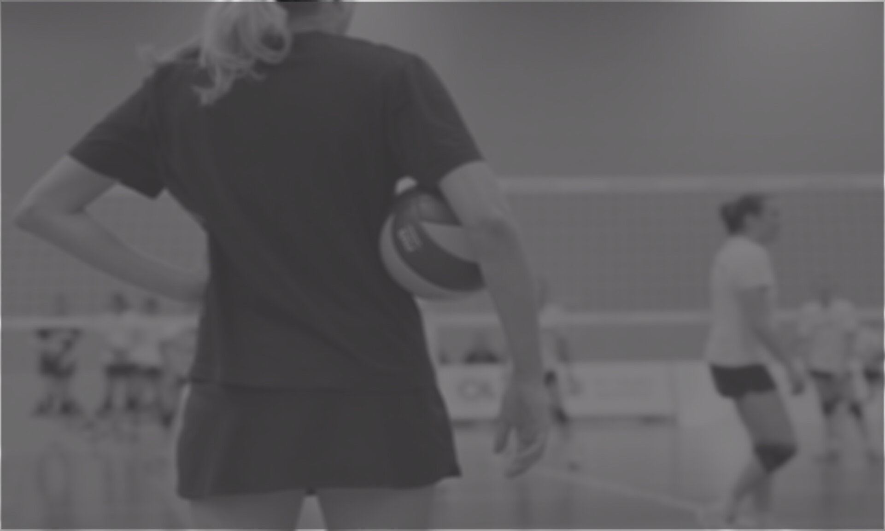

J'ai toujours eu une attirance pour le secteur du digital et des réseaux
sociaux.
La création de contenus qui fait appel à ma créativité est un de mes
points forts que j’ai déjà apprécié lors de mes dernières expériences.
En tant que Vice-Présidente Communication au sein d’une des entreprises
étudiantes de l’ISC Paris, j’ai supervisé une équipe de 2 personnes afin
de créer, animer et modérer les réseaux sociaux de cette dernière. Mon
rôle consistait également à faire de la publicité sur les réseaux et
dans l’école pour l’événement phare : les cafés débats avec des invités
connus comme William Eldin (le fondateur de Coyote) ou encore Stéphane
Demilly (un député de la République Française).
Pendant mon année de Master 2, j’ai été amenée à créer des maquettes
pour la création d’un site internet pour une entreprise fictive. La
mission était de recueillir les besoins du client, les analyser et
comprendre sa problématique pour lui proposer une solution. Ce projet
m’a conforté dans mon désir de conseiller les clients sur la stratégie
la plus adaptée pour répondre à leurs enjeux.
J’ai effectué mon stage de fin d’études en tant que Community Manager
chez MSC Croisières pendant une période particulièrement éprouvante pour
ce secteur d’activités. En plus de ma mission de création, animation et
modération, j’ai proposé de mettre en place un benchmark pour trouver
une nouvelle stratégie sur les réseaux dans le but de rassurer les
clients.

Personnalité
• Créative
• Autonome
• Force de proposition
• Adaptable
• Organisée
• Rigoureuse
Compétences
• Gestion des réseaux sociaux
• Création de contenus
• Animer une communauté
Logiciels
• Suite Adobe
• iMovie
• HTML/CSS
• Hootsuite
• Canva
• Crello

• Volley-Ball
• Tennis
• Equitation
Sports
• Tennis
• Equitation
Langues
• Espagnol : Niveau A1